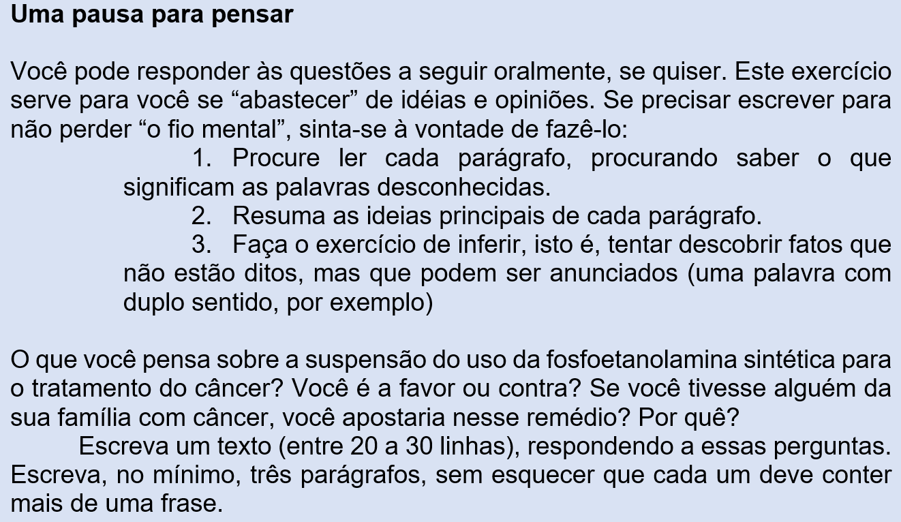

Capítulo 5: A indústria química e fármacos controversos
Questão-problema:
O que você pensa sobre a suspensão do uso da fosfoetanolamina sintética para o tratamento do câncer?
A saga da pílula contra o câncer
A fosfoetanolamina sintética promoveu um intenso debate científico e jurídico ao longo dos últimos dois anos. Trata-se de uma substância ainda na fase de testes que ganhou notoriedade após diversos pacientes em tratamento de câncer relatarem melhoras significativas na qualidade de vida com o uso dela. Mesmo sem aprovação da Agência Nacional de Vigilância Sanitária (Anvisa), a pílula era distribuída gratuitamente pelo Instituto de Química da Universidade de São Paulo de São Carlos (SP), ligado à USP.
Em outubro de 2015, o ministro Edson Fachin, do Supremo Tribunal Federal, liberou a substância a uma paciente com câncer do Rio de Janeiro, justificando a medida devido à “excepcionalidade” da situação.
Após essa decisão, diversas sentenças de varas pelo Brasil todo passaram a obrigar a USP ou até mesmo secretarias de saúde a fornecer a droga para pacientes que entravam com ação na Justiça. A 2ª Turma Recursal da Fazenda Pública de Porto Alegre arbitrou multa diária de R$ 1,2 mil em caso de descumprimento da medida.
Em São Paulo, o Órgão Especial do TJ cassou todas as liminares que obrigavam a USP a fornecer a substância. O entendimento foi que sua eficácia no combate ao câncer não está comprovada.
Em Goiás, o secretário da saúde quase foi preso. O juiz Wilson Safatle Faiad determinou que o estado de Goiás tinha 48 horas para providenciar a fosfoetanolamina e estipulou a pena de prisão do secretário em caso de descumprimento. Porém, a USP, que não era parte na ação, afirmou que só pode fornecer a substância se estiver no polo passivo da ação.
O debate enfim chegou ao Congresso. O Projeto de Lei da Câmara 3/2016 previa a liberação da produção sem registro da Anvisa. Foi aprovado na Câmara e no Senado.
Até que o Plenário do Supremo Tribunal Federal decidiu suspender a lei. Por seis votos a quatro, os ministros seguiram o voto do relator, ministro Marco Aurélio, para quem é inconstitucional a distribuição do remédio sem estudos que comprovem sua eficácia.
(Disponível em: http://www.conjur.com.br/2017-jan-16/desenvolvedor-pilula-cancer-enfrenta-usp-justica)
(Fonte: http://www.testonoticias.com.br/sa%C3%BAde/p%C3%ADlula-do-c%C3%A2ncer-volta-%C3%A0-discuss%C3%A3o-1.1962204)

Reconstruindo conhecimentos:
A fálacia ou a falha na argumentação
Vamos trabalhar com um texto que é uma falácia.
O que é isso? Falácia é um substantivo abstrato feminino que significa alguma coisa ou algum fato falso que se “veste” de verdadeiro. Se digo, por exemplo, “sua afirmação é uma falácia”, estou dizendo que ela não é verdadeira.
Filosoficamente, falácia é qualquer enunciado ou raciocínio falso que simula uma veracidade.
O adjetivo correspondente ao substantivo falácia é falacioso.
Reconhecer as falácias é por vezes difícil. Os argumentos falaciosos podem ter validade emocional, íntima, psicológica, mas não validade lógica. É importante conhecer os tipos de falácia para evitar armadilhas lógicas na própria argumentação e para analisar a argumentação alheia.
Trago esse texto para alertar você de que as palavras – e até a matemática – podem ser usadas com o propósito de nos enganar; portanto, atenção sempre com o que se lê e o que se escreve!
Ninguém trabalha
- Rapaz, que pressa é essa?
- Vou ao trabalho, já estou atrasado.
- Trabalho? Não me diga que você trabalha...
- Claro que trabalho. E você, não trabalha?
- Eu não. Nem você.
- Calma lá, eu trabalho.
- Então vamos ver. Quantas horas você trabalha por dia?
- 8 Horas.
- E quantas horas tem o dia?
- 24 horas.
- Muito bem. O ano tem 365 dias de 24 horas. Se você trabalha 8 horas por dia, logicamente você trabalha 1/3 do dia. 1/3 de 365 são 121. Você trabalha 121 dias por ano.
- Isso mesmo.
- E quantos domingos há no ano?
- 52.
- Então 121 menos 52 são 69.
- É isso mesmo.
- Você trabalha 69 dias por ano. Quantos dias de férias você tem?
- 30.
- Logo, 69 menos 30 são 39. Portanto, você trabalha 39 dias por ano.
- Bem...
- Contando o Natal, Ano Novo, Sexta-Feira Santa, Carnaval, Corpus Christi, Dias Pátrios, aniversário da cidade e outros, temos uns 12 feriados nos quais não se trabalha. 39 menos 12 são 27 dias.
- É... mas...
- Sábado você trabalha meio dia. Meio dia durante o ano são 26 dias, não é verdade?
- Exato!!
- 27 menos 26 são 1. Você trabalha 1 dia por ano.
- Que estranho! Mas de qualquer maneira, trabalho um dia por ano.
- Aí é que está o seu engano. Esse dia de sobra é o primeiro de maio, Dia do Trabalho... e nesse dia ninguém trabalha...
(Fonte: http://www.consciencia.net/humor/trabalho.html)
Como foi que a matemática e as palavras nos enrolaram neste texto? Onde está o engano? Você consegue explicar o raciocínio falacioso?
Recordando algumas noções gramaticas
Em capítulos anteriores, trabalhamos com a diferença entre adjetivo e substantivo. Vimos que um substantivo responde à pergunta que se faz com o verbo ter, isto é, se alguém é elegante é porque tem elegância. No entanto, quando queremos saber se é um adjetivo, usamos o verbo ser, isto é, se alguém tem tristeza, esse alguém é triste. Vimos também que um substantivo abstrato tem sua origem nos adjetivos. Como um adjetivo precisa de um substantivo para poder dar-lhe uma qualidade, o substantivo abstrato vai precisar de um ser concreto para poder existir.
Praticando - Reflexão e ação
1. Vamos exercitar nosso raciocínio que detecta falácias?
Os textos abaixo possuem falácias. Descubra-as e explique-as:
1. Todo político é corrupto.
2. A violência no Brasil é resultado dos programas de TV.
3. Joana morreu depois de fazer radioterapia. Então quem tem câncer não deve fazer esse procedimento.
4. Depois de Felipe dizer que o governo deveria investir mais em saúde e educação, Jader respondeu dizendo estar surpreso que Felipe odeie tanto o Brasil, a ponto de querer deixar o nosso país completamente indefeso, sem verba militar.
5. Apontando para um gráfico metido a besta, Rogério mostra como as temperaturas têm aumentado nos últimos séculos, ao mesmo tempo em que o número de piratas têm caído; sendo assim, obviamente, os piratas é que ajudavam a resfriar as águas, e o aquecimento global é uma farsa.
6. Lucas não queria comer o seu prato de cérebro de ovelha com fígado picado, mas seu pai o lembrou de todas as crianças famintas de algum país de terceiro mundo que não tinham a sorte de ter qualquer tipo de comida.
7. Depois de Salma apresentar de maneira eloquente e convincente uma possível reforma do sistema de cobrança do condomínio, Samuel pergunta aos presentes se eles deveriam mesmo acreditar em qualquer coisa dita por uma mulher que não é casada, já foi presa e, pra ser sincero, tem um cheiro meio estranho.
8. O político Aníbal Zé das Couves foi acusado pelo seu oponente de ter desviado dinheiro público na construção de um hospital. Aníbal não responde a acusação diretamente e devolve insinuando que seu oponente também já aprovou licitações irregulares em seu mandato.
9. Eduardo afirma ser vidente, mas quando as suas “habilidades” foram testadas em condições científicas apropriadas, elas magicamente desapareceram. Ele explicou, então, que elas só funcionam para quem tem fé nelas.
10. Graça e Helena estavam interessadas no mesmo homem. Um dia, enquanto ele estava sentado próximo suficiente a elas para ouvir, Graça pergunta em tom de acusação: “como anda a sua reabilitação das drogas, Helena?”
11. Luciano, bêbado, apontou um dedo para Jão e perguntou como é que tantas pessoas acreditam em duendes se eles são só uma superstição antiga e boba. Jão, por sua vez, já havia tomado mais Guinness do que deveria e afirmou que já que tantas pessoas acreditam, a probabilidade de duendes de fato existirem é grande.
12. Um professor de matemática se vê questionado de maneira insistente por um aluno especialmente chato. Lá pelas tantas, irritado após cometer um deslize em sua fala, o professor argumenta que tem mestrado pós-doutorado e isso é mais do que suficiente para o aluno confiar nele.
13. Angus declara que escoceses não colocam açúcar no mingau, ao que George aponta que ele é um escocês e põe açúcar no mingau. Furioso, como um "escocês de verdade", Angus berra que nenhum escocês de verdade põe açúcar no seu mingau.
2. Na poesia abaixo (na verdade ela é uma canção) você encontrará muitos adjetivos e muitos substantivos abstratos. Pinte de vermelho os substantivos abstratos e de lilás os adjetivos
Guerreiro menino
(Fagner)
Um homem também chora
Menina, morena
Também deseja colo
Palavras amenas
Precisa de carinho
Precisa de ternura
Precisa de um abraço
Da própria candura
Guerreiros são pessoas
São fortes, são frágeis
Guerreiros são meninos
No fundo do peito
Precisam de um descanso
Precisam de um remanso
Precisam de um sonho
Que os tornem perfeitos
É triste ver este homem
Guerreiro menino
Com a barra de seu tempo
Por sobre seus ombros
Eu vejo que ele berra
Eu vejo que ele sangra
A dor que traz no peito
Pois ama e ama
Um homem se humilha
Se castram seus sonhos
Seu sonho é sua vida
E a vida é o trabalho
E sem o seu trabalho
Um homem não tem honra
E sem a sua honra
Se morre se mata
Não dá pra ser feliz
(Disponível em: https://www.letras.mus.br/fagner/guerreiro-menino/)
O que aprendi:
- Conceito de falácia: qualquer enunciado ou raciocínio falso que simula uma veracidade.
- Revisão de conteúdo gramatical: substantivo e adjetivo.